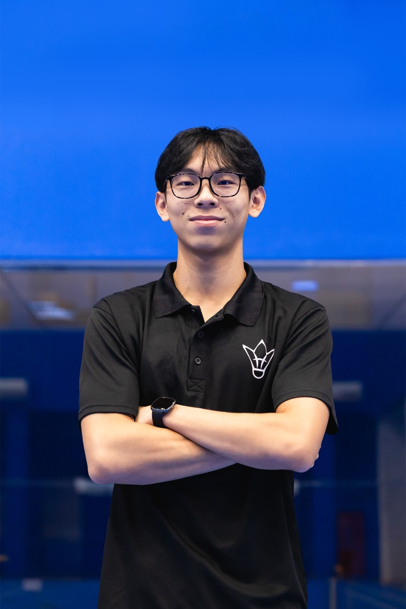

About Thong
Kin Yu is a Development Coach at Élever Badminton and a competitive player with the SMU badminton team, bringing seven years of playing experience.
Kin Yu’s badminton journey began at six years old - running around the court, dragging his racket along the concrete floor, simply because it was fun. That joy never left. He began formal training in Secondary 1, finished second at the Tampines Meridian Age Group Tournament 2018 (U17), and today represents Singapore Management University’s competitive badminton team.
Friendly and patient, Kin Yu builds every session on strong fundamentals - taking the time to make sure each student truly masters them before moving on to the next complex skill. As an active player himself, he loves getting on court and doing drills alongside his students, striving to make every training session a fun and fresh experience.
Sharing Élever Badminton’s mission of helping every child develop as a player and as a confident individual with a lifelong love of the game, Kin Yu hopes every student discovers the same joy he first found as a six-year-old with a racket in hand.
Achievements
- Competitive player with the SMU badminton team
- Second at the Tampines Meridian Age Group Tournament 2018 (U17)
On court
to
assets/img/coaches/thong-kin-yu/